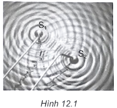

Mỗi câu có 4 phương án, chỉ chọn một đáp án đúng (0,25 điểm).
1
Nhận biết
Trong thí nghiệm Y-âng về giao thoa ánh sáng, bước sóng ánh sáng đơn sắc dùng trong thí nghiệm là $\lambda$, khoảng cách giữa hai khe là $a$, khoảng cách từ mặt phẳng chứa hai khe đến màn là $D$. Trên màn quan sát vị trí của vân sáng $N$ cách vân sáng trung tâm một đoạn
2
Nhận biết
Trong thí nghiệm Y-âng về giao thoa ánh sáng, bước sóng ánh sáng đơn sắc dùng trong thí nghiệm là $\lambda$, khoảng cách giữa hai khe là a, khoảng cách từ mặt phẳng chứa hai khe đến màn là $D$. Trên màn quan sát vị trí của vân tối $N$ cách vân sáng trung tâm một đoạn
3
Nhận biết
Trong thí nghiệm I-âng, vân tối thứ nhất xuất hiện ở trên màn tại các vị trí cách vân sáng trung tâm là
4
Nhận biết
Trong thí nghiệm I-âng, vân sáng bậc nhất xuất hiện ở trên màn tại các vị trí mà hiệu đường đi của ánh sáng từ hai nguồn đến các vị trí đó bằng
5
Nhận biết
Thực hiện giao thoa với ánh sáng trắng, trên màn quan sát thu được hình ảnh như thế nào sau đây?
6
Thông hiểu
Phát biểu nào sau đây là không đúng?
7
Thông hiểu
(SBT - KNTT) Trong thí nghiệm về giao thoa sóng nước Hình 12.1, tốc độ truyền sóng là $1,5\,m/s$, cần rung có tần số $40\text{ Hz}$. Khoảng cách giữa 2 điểm cực đại giao thoa cạnh nhau trên đoạn thẳng $S_{1}\,S_{2}$ là:¶

8
Thông hiểu
(SBT - KNTT) Trong thí nghiệm ở hình 12.1 SGK, khoảng cách giữa 2 điểm $S_{1},\,S_{2}$ là $d=11\text{ cm}$. Cho cần rung, ta thấy hai điểm $S_{1},\,S_{2}$ gần như đứng yên và giữa chúng còn 10 điểm đứng yên không dao động. Biết tần số rung là $26\text{ Hz}$, tốc độ truyền sóng là:
9
Thông hiểu
Trong thí nghiệm tạo vân giao thoa sóng trên mặt nước, người ta dùng nguồn dao động có tần số $100\text{ Hz}$ và đo được khoảng cách giữa hai cực tiểu liên tiếp nằm trên đường nối hai tâm dao động là $4\text{ mm}$. Tốc độ sóng trên mặt nước là bao nhiêu?
10
Thông hiểu
Tại mặt thoáng của một chất lỏng có hai nguồn sóng $S_{1}$ và $S_{2}$ dao động theo phương thẳng đứng với cùng phương trình $u=a\cos40\pi t$ ($a$ không đổi, $t$ tính bằng $s$). Tốc độ truyền sóng trên mặt chất lỏng bằng $80\text{ cm}/s$. Khoảng cách ngắn nhất giữa hai phần tử chất lỏng trên đoạn thẳng $S_{1}\,S_{2}$ dao động với biên độ cực đại là
11
Thông hiểu
Dùng một âm thoa có tần số rung $f=100\text{ Hz}$ người ta tạo ra tại hai điểm $S_{1},\,S_{2}$ trên mặt nước hai nguồn sóng cùng biên độ, ngược pha. Kết quả tạo ra những gợn sóng dạng hypebol, khoảng cách giữa hai gợn lồi liên tiếp là $2\text{ cm}$. Tốc độ truyền pha của dao động trên mặt nước là
12
Thông hiểu
Trong một thí nghiệm về giao thoa sóng nước, hai nguồn sóng kết hợp được đặt tại $A$ và $B$ dao động theo phương trình $u_{A}=u_{B}=a\cos25\pi t$ ($a$ không đổi, $t$ tính bằng $s$). Trên đoạn thẳng $\text{AB}$, hai điểm có phần tử nước dao động với biên độ cực đại cách nhau một khoảng ngắn nhất là $2\text{ cm}$. Tốc độ truyền sóng là
13
Thông hiểu
Hai nguồn sóng kết hợp $S_{1}$ và $S_{2}$ luôn luôn dao động cùng pha, cùng tần số $f=50\text{ Hz}$ và nằm cách nhau $6\text{ cm}$ trên mặt nước. Người ta quan sát thấy rằng các giao điểm của các gợn lồi với đoạn thẳng $S_{1}\,S_{2}$ chia $S_{1}\,S_{2}$ làm 10 đoạn bằng nhau. Giá trị của tốc độ truyền sóng là
14
Thông hiểu
Trên đường nối hai nguồn dao động kết hợp trên mặt nước, giữa hai đỉnh của hai vân cực đại giao thoa có 3 vân cực đại giao thoa nữa và khoảng cách giữa hai đỉnh này là $5\text{ cm}$. Biết tần số dao động của nguồn là $9\text{ Hz}$. Tốc độ truyền sóng trên mặt nước là
15
Thông hiểu
Trong thí nghiệm giao thoa trên mặt nước, hai nguồn $A,B$ dao động cùng pha với tần số $f$. Tại một điểm $M$ cách các nguồn $A,B$ những khoảng $d_{1}=19\text{ cm},\,d_{2}=21\text{ cm}$, sóng có biên độ cực đại. Giữa $M$ và đường trung trực của $\text{AB}$ không có dãy cực đại nào khác. Vận tốc truyền sóng trên mặt nước là $v=26\text{ cm}/s$. Tần số dao động của hai nguồn là
16
Thông hiểu
Tại hai điểm $M$ và $N$ trong một môi trường truyền sóng có hai nguồn sóng kết hợp cùng phương và cùng pha dao động. Biết biên độ, vận tốc của sóng không đổi trong quá trình truyền, tần số của sóng bằng $40\text{ Hz}$ và có sự giao thoa sóng trong đoạn $\text{MN}$. Trong đoạn $\text{MN}$, hai điểm dao động có biên độ cực đại gần nhau nhất cách nhau $1,5\text{ cm}$. Tốc độ truyền sóng trong môi trường này có giá trị là
17
Thông hiểu
Trong thí nghiệm về giao thoa sóng, hai nguồn kết hợp $A,B$ dao động cùng tần số $f=10\text{ Hz}$ và cùng pha. Vận tốc truyền sóng trên mặt nước là $v=30\text{ cm}/s$. Tại một điểm $M$ cách các nguồn $A,B$ những đoạn $d_{1}=\text{MA}=31\text{ cm}$ và $d_{2}=\text{MB}=25\text{ cm}$ là vân cực đại hay vân đứng yên thứ mấy tính từ đường trung trực của $\text{AB}$?
18
Thông hiểu
(SBT - CTST) Tại 2 điểm $A$ và $B$ trong cùng một môi trường có 2 nguồn sóng kết hợp dao động cùng phương với phương trình lần lượt là $u_{A}=a\cos\omega t$ và $u_{B}=a\cos\left(\omega t+\pi\right)$. Xem tốc độ và biên độ sóng do mỗi nguồn tạo ra không đổi trong quá trình sóng truyền. Trong khoảng giữa $A$ và $B$ xảy ra hiện tượng giao thoa sóng do 2 nguồn trên gây ra. Phần tử vật chất tại trung điểm của đoạn $\text{AB}$ dao động với biên độ bằng
19
Thông hiểu
Tại hai điểm $A$ và $B$ trên mặt nước có hai nguồn sóng giống nhau với biên độ $a$, bước sóng là $10\text{ cm}$. Điểm $M$ cách $A$ một khoảng $25\text{ cm}$, cách $B$ một khoảng $5\text{ cm}$ sẽ dao động với biên độ là
20
Thông hiểu
Tại hai điểm $A$ và $B$ trên mặt nước có hai nguồn sóng giống nhau với biên độ $a$, bước sóng là $10\text{ cm}$. Điểm $N$ cách $A$ một khoảng $25\text{ cm}$, cách $B$ một khoảng $10\text{ cm}$ sẽ dao động với biên độ là